I AM A WEBSITE: A PROJECT WHOSE NARRATOLOGY AND MEANING REFLECT EACH OTHER
It would not be enough for me to translate my curiosity into a singular academic essay and leave it as such. I would not be satisfied with an endpoint that could only be artificially imposed upon this academic undertaking. In Market Strategization, I use technology as a conceptual tool to enhance argumentation through irony, but in creating this project I wanted to use technology and actually create something that grows out of and around existing narratological and academic structures for research. I wanted to employ my voice in English, Philosophy, and Computer Science, but also walk on the fourth leg of interdisciplinarity itself. I wanted to extract growth out of unrecognizability for myself, and the interconnections I have found between my passionate engagements with cyberfeminism and narratology.
In many cases, I will approach the effect a text has by considering how the meaning generated by the writing is reflected by the structure of the text itself. This is a lesson, for me, that has carried over from my education as an English major before I expanded my coursework into Interdisciplinary Studies. It is most closely related to poetic deconstruction, but I have used this framework on a larger scale for other works. For example, my essay The Antiteleological Structure of Franz Kafka’s “The Trial,” examines the use of exhaustive and convoluted language to convey the impossibility of navigating endless bureaucracy– fused together, the language and meaning form a self-supporting engine for the anxiety at the heart of the text. Additionally, in an untitled writing project I explore how a definition of ekphrasis by Tomás Laurenzo in his submission to Technoetic Arts: A Journal of Speculative Research applies to Conference of the Birds by Farid ud-Din Attar (my reference for monism in this piece), so that the writing, illustration, meaning and ontology of the text construct a monistic universe to exist within.
For I AM A WEBSITE, my intention was to literalize the idea of the narratology of a text reflecting its meaning on several levels. Certain functions, like the paintbox() function expands the text to literally reflect the sentence it is attached to. “[A] new color to paint with…” goes from a simile to a literalism as it gives the reader the ability to see the text in new colors. The shipOfTheseus() function adds literary and philosophical context to the meaning generated in the text while mirroring it visually for the reader; “the very same accumulation of past experiences that changes us from our past self to our present self” opens up an explanation of the myth of the Ship of Theseus that is replaced letter by letter until it is the same message with different parts, changed over time into a present self by past experience.
On a larger scale, the website as a whole reflects two meanings generated by the text it holds: the committal of oneself to a technological medium, and the restructuring of oneself to embrace multiplicity without the expectation of finalizing unification. While I talk about uploading oneself into the computer, I upload massive amounts of my writing, my context, my face, my multiple professional and academic voices. While it is not the same meaning of “uploading oneself into a computer” that I use in Market Strategization, it is a more attainable one that also reflects the meaning of the text in structure. While I warn future social media coordinators to be sure that their “I” will be preserved through transloading in Market Strategization, Haraway’s cyborg tells us not to expect unification. What I am actually doing in I Am A Website is taking responsibility for the creation of a digital self; I am using a digital medium not as something confining and flattening but as an extension of my “organic self” that fleshes me out and restructures me in new and exciting ways. The website and I have created one another, and although I am reasonably sure that I was here first, I don’t submit to the idea that that gives me any supremacy over the digital extension. We are collaborators. As I discover more ways to add to the code, it will add more to me through its growth.
An important source of inspiration for the narratological structure of this website is Ursula K. Le Guin’s Carrier Bag Theory of Fiction. Le Guin draws on the anthropological theory that the first primitive technology was most likely a container to say that narratives themselves are a technology in the shape of a container. She narrates the Hero Story, centering a “long, hard, thing” and the man who uses it to dominate conflicts with others, as a form of individualistic narrative that has usurped the idea of what a narrative’s essential purpose is. She says that narratives do not need to glorify individuals or retell conflicts at their core, but the technological purpose of narratives is to contain a multitude of voices in one spoken “area.” She says each voice, including conflict and stress:
“may be seen as necessary elements of a whole which itself cannot be characterized either as conflict or as harmony, since its purpose is neither resolution nor stasis but continuing process.
Finally, it's clear that the Hero does not look well in this bag. He needs a stage or a pedestal or a pinnacle. You put him in a bag and he looks like a rabbit, like a potato.”
Le Guin’s theory fits well with Haraway’s cyborg that defies the search for unitary identity. For both narratives within Le Guin’s theory and Haraway’s cyborg, their “purpose is neither resolution nor stasis but continuing process.” The Hero and the One are both dominating forces that are dethroned by a re-ontologization of narrative and the self respectively. Russell, who references Le Guin in their Glitch Feminist Manifesto, in the glitch-self forms a kind of container for multiple definitions of one’s own identity that does not allow one definition to be a dominating “Hero” figure of one’s body. Le Guin is intimately familiar with the flattening and mirroring brought on by inadequate definitional structures, writing of her own belief in the Hero Story, “It is the story that makes the difference. It is the story that hid my humanity from me.”
Although in Market Strategization I ironically snark that the container mode of self is not “traditional” humanity, an earnest aspiration of this project is to create a digital narrative structure that “unhides” the humanity of the self between multiplicities. I employ my voice as a copywriter and as an academic, with my academic voice fractalized between English, Philosophy and Computer Science while unified in interdisciplinarity. The webpage itself allows my writing to slide between genres, existing as both creative and critical, naive and reflexive, at once.
The role of “academic analysis” in Market Strategization is as a way of introducing more conversational context into the ideas I am exploring. But, turning the Academic Level to 100 overtakes the text with a self-reflective literary analysis. Thematic Analysis of Market Strategization’s status as academic engagement is reflected visually by its shared “essay-text” css class. It looks like the citations, the engagement through academic contextualization, have overtaken the entire page. Upon reading, it seems that it has overtaken the entire text– giving a reflexive academic look at a naive (unselfaware) creative writing peace.
But in reality, the reflexivity of the literary analysis is productively engaged, horizontally dialectical, cyborgified, with the irony of the creative writing piece. By playing at the unselfaware earnesty of the marketing voice, the fictional Market Strategization brings to light the world that Thematic Analysis of Market Strategization looks to subvert. As Ursula K Le Guin writes in Carrier Bag Theory of Fiction,
“Science fiction properly conceived, like all serious fiction, however funny, is a way of trying to describe what is in fact going on, what people actually do and feel, how people relate to everything else in this vast sack, this belly of the universe, this womb of things to be and tomb of things that were, this unending story.”
As Donna Haraway writes in A Cyborg Manifesto,
“Irony is about contradictions that do not resolve into larger wholes, even dialectically, about the tension of holding incompatible things together because both or all are necessary and true. Irony is about humor and serious play. It is also a rhetorical strategy…At the center of my ironic faith, my blasphemy, is the image of the cyborg.”
In Market Strategization, I am engaging in self-aware unselfawareness and holding deep ironic faith in the academic institution’s mission of longevity and financial survival. Thematic Analysis of Market Strategization “is a way of trying to describe what is in fact going on, what people actually do and feel,” that could otherwise be made unrecognizable in the shadow of that ironic faith. By bringing both to light, horizontally structured, I don’t allow one to dominate the other– neither came before the other, neither reveals a truth about the other without the other revealing a truth about itself. The voices of ironic faith and earnest curiosity do not resolve into a larger whole, the further analysis of each within I AM A WEBSITE only attempts to trace the motions of the two together.
I AM A WEBSITE is the name of this page, and the name of this project as a whole. If any new pages were created beyond this, they would be named I AM A WEBSITE. The inspiration for this title was Orhan Pamuk's My Name Is Red, a book about artistic recreations of individual perspective in which a character repeatedly monologues from the perspective of another being-- a corpse, a dog, a woman. I took inspiration from the idea that speaking as a being, therefore as capable of referencing oneself as a perspective in the world, can "animate" the selves of things that are somehow not us. We find the shared parts between our selves and the selves of the other thing, and through performance we cybernetically graft our organic selves onto an artificial source to create an ironic whole. Self-creation does not need to be the creation of our selves. It can be the creation of other selves with our organic self as a reference point.
To further explore self-creation, I turn to Tomás Laurenzo's Ekphrasis. Ekphrasis is a visual art/machine engineering work where a robot plucks at a screen upon which a scarred human body is projected. Writing of the theoretical approach behind their work, Laurenzo says:
"The skin as an articulator of possession only makes sense under the assumption of an objective otherness; it requires something that testifies that the outside-of-the-skin exits, a meta-representation of the skin container, where representation itself explicitly modifies the representation apparatus."
Laurenzo's work was made explicitly to critique mind/body dualism by an examination of the concept of self-creation through ekphrasis. Their writing has been very influential in my use of narratology, as I think it is illuminating of how a text's narratology and meaning can reflect one another.
The text is the representation, the narratology the representation apparatus. To be clear, narratology is not the only possible represenation apparatus analogous to a text, but what I am asking is: What kind of meaning can be generated by a text, given it's structure? Le Guin makes the point that texts structured like "long, hard things" lend way to the creation of heroes in a way that texts structured like bags tend to undermine. Laurenzo positions ekphrasis as a (somewhat obsessive) re-writing of one's own image; the self is both the thing represented and the thing representing the thing.
This, I would say, is not what is happening on social media. I have heard posting about oneself online, especially for "digital native" generations who can have a more habitual relationship with social media, be called "self obsession." But ultimately, the social media platforms we use are providing structure for us to translate ourselves into, meaning we have very little control over the representation apparatus. Without control of the representation apparatus, "obsessive writing of one's own image" becomes dualistic. The social media platform, in its structural programming, testifies that the outside-of-the-skin exists because it cannot be restructured to fit a reinvention of the self-image. Social media is a technology of the self that lacks the intimacy of self authorship: like a paint-by-numbers activity that lets you choose the colors, but not what shape they form in the end.
The social media coordinator I write to/as in Market Strategization solves this by bodily becoming the representation apparatus, uploading themselves into the computer. But, this is a satisfactory solution only after having been internally sculpted by social media structures. For the character I write to/as, a social-media platform body is a more suitable representation of the mind than the human body. In this equation, the intimate self concept of the social media coordinator is actually what is modified by the representation of themselves on social media given by their job. They are a fluid, attentive, and multiplicitous being- shaped this way by social media (which is why they were hired), but continuing it for the sake of their employment. But for this character, the modification of the self-concept is caused by the inflexibility of the social media platform as a representation apparatus to respond to the self's desire for more fluid representation.
The social media coordinator is caught between demands. Marketable social media profiles, those of influencers and brands, have a static, "individual identity." But the coordinator must create this static identity while posessing fluidity. So while the brand identity they create never appears to change, they should also become anything in response to the rapid shifting potentialities of meme culture. The demand of fluidity is the demand to be as one person an embodiment of the mass audience of social media, precognitively attuned to the flow of attention in a crowd of people so they can put on a show before the audience knows they are attending one. The social media coordinator pre-upload contains a self that has outgrown the limitations of their previous body, a self more suited to a body that can dynamically support their multiplicity. Self upload means the platform is no longer a place where the social media coordinator creates a static image. Self upload animates the platform as a body, a representation apparatus.
Market Strategization is a page on this website where I can confront social media's relationship to self-creation through fiction and irony. An obvious form of self-creation is the fact that I am speaking as a character of myself that I have created, one with a more unshakable faith in the longevity of social media management. They believe that changing yourself to fit your job is a worthy pursuit. Also, if you are hired at a job, its because your "self" is a solid thing that is somehow pre-fitted to the shape of the job container, rather than a fluid that has adapted to the container it was put in. Market Strategization was the first part of the text that I wrote, with Thematic Analysis of Market Strategization and I AM A WEBSITE (which I am still writing) coming afterwards. The building outward of this text is a form of self-creation, beginning at a tense and ironic engagement with the parts of myself shaped by/towards my job. Irony allows me to articulate the things I don't believe in, but don't have the vocabulary to escape entirely. I use the mechanisms of thematic analysis and personal essay as cybernetic appendages that expand the self outwards by their fusion to the self that is already present. These are both forms of writing in addition to fiction, which is why I specified fiction and not the more general "narrativity" when I began to analyze Market Strategization.
However, because I write in pre-defined "genres" that I am modifying my voice to fit, I am replicating the same dualism between representation and representation apparatus that Laurenzo's Ekphrasis critiques. The inorganic parts that Haraway's cyborg integrates, which for me are different authorial voices, cannot be allowed to remain inorganic without testifying that "the outside of the skin" exists. The irony of Market Strategization is left as evidence that the external structure that my voice is being committed to is not a satisfactory method of self-creation. It shows that the "long and hard story" narratology that befits Le Guin's "hero" breaks down at the point where it expects the person at the center to posess a solid self that is pre-fitted to the narratological container. This is the same kind of "flattening" of the self that Legacy Russell finds as a product of systems of identity definition, in order to have a self exist, fluid and multiplicitous aspects are made ineffable. Narrative structures that break down when the protagonist is not flattened are not suited for self-upload because, as I warn in Market Strategization, there is not sufficient evidence that an "I" is preserved through the transition from one form of embodiment to the other.When the self is in a state of transition, becoming, irony, and doubt, the statically linear narrative mode is inadequate. Writing a narrative that breaks down as it reveals these mode of the self is not enough to "unhide" them, which is why you are already not reading a book about my life as soon as you started to read my thesis. To fully commit to this text's meaning of "self upload," I seek to create a narratology and a self that can unify through technological embodiment.
It is possible to divide the different elements of this website into dualisms: the frontend and the backend, the creative writing and the academic analysis, the narrative and the reflection, the coder and the user, the character and the true self. In Thematic Analysis of Market Strategization, I indicate that the mission of this text is to engage academic analysis without seeking wholeness or end- and as such, what I am writing now cannot end on a whole picture of how the narratology of this text works. This has been attempted by none other than Edgar Allen Poe, who in The Philosophy of Composition, reveals (to the point of insisting) that he wrote The Raven with a mathematical precision, keeping his eye trained on the philosophically ideal images to transmit his intended mood I am not trying to replicate Poe's undertaking. Doing so would be an example of what Haraway calls an "antagonistic dualism," it would subordinate the text to the complete authorial understanding of the text. However, I have made a point to code this website as a structural nuisance to the subordinating process of explanation.
The accordionCite() function in the backend is what changes the page in response to the “Academic Level” slider input in the frontend. accordionCite() demonstrates/constructs the fluid “academic mode” I extract from Haraway in Thematic Analysis of Market Strategization. It gives the text a horizontal staircase structure: based on steps, but without one version being elevated over the other. This way, the meaning of the text is reflected within the structure of the text via the text's embodiment within a technological medium. Other functions such as paintbox() and shipOfTheseus() do the same by taking key moments of poeticism and analysis and illuminating them through dynamic webpage features (these functions allow users to change the colors on the page, and read a self-replacing thought experiment on self-replacement, respectively).
The functions stay in Market Strategization as a hint towards the self that desires freedom from the limited narratology afforded to them, and accordionCite() acts as a bridge towards another form of narratological self-creation by fluidly replacing the narrative with an essay that translates and expands the meaning of Market Strategization by using thematic analysis. But as Thematic Analysis of Market Strategization discovers that the cyborg-self being constructed between the two texts seeks further explanation without wholeness or end, the "GO DEEPER" button appears. This button is a translation of the "Office Hours" link at the end of Market Strategization, that generates text implying that the site has already transformed itself into the text the user is reading out of a "generic digital portfolio," and the user has already transformed themselves by upload and re-download.
"GO DEEPER" brings you to this page, literally loading in a new "body" of text where Market Strategization and Thematic Analysis of Market Strategization transition smoothly enough from one to the other. I chose to use a quality of the web browser that is analogous to re-ontologization, rather than creating a function to reflect the meaning of the text, to demonstrate how the website structure includes analogs to processes of re-writing one's self image. Upon load, a total change in representation happens, but it is still the same site. The loaded page includes a narratological analysis of the dually embodied Market Strategization and Thematic Analysis of Market Strategization, adding a layer of self-reference (this page) onto the layer of self-reference (Thematic Analysis) onto the layer of self-reference (the irony in Market Strategization), using a technological language of self-reference (frontend and backend code/UI-UX communicating via interactive functions and animations), to transmit a self-referential meaning (talking about creating a technological self upload while attempting to create one, with the talking as an intentional part of creation).
The idea that selves are structurally generated through repetitive self-reference has been thoroughly explored in Douglas Hofstadter's Goedel Escher Bach, where he coins the term "strange loop" for systems whose self-referentiality creates productive logical breakdowns. Strange loops generate incomplete (and incompletable) definitions of the thing that they are so that each new definition necessitates a new definition ad infinitum. This way of looking at self-reference elucidates how Laurenzo's ekphrasis and Haraway's cyborg operate at the same time: an obsessive re-writing of one's own self-image, that references oneself as an organic-inorganic cybernetic synthesis, to cybernetically graft an inorganic organic-inorganic cybernetic synthesis to its organic organic-inorganic cybernetic synthesis. (Repeat ad infinitum.)
What this actually means in the structure of this project is: The Market Strategization/Thematic Analysis of Market Strategization dualism is an organic-inorganic cybernetic synthesis, with this page as another organic-inorganic cybernetic synthesis. In each of these texts, the organic-inorganic cybernetic synthesis is achieved by a mixture of authorship and citation, inward relation via self-reference and outward relation to other pages via hyper-reference. By hyper-reference, the pages are cybernetically attached into a larger being- but this cannot resolve into a whole because of the analytic narratological structure. Each cybernetic synthesis prompts a new page of definition explaining what the narratology of the text is now that the whole text has another page of explanation, prompting a new page of definition explaining what the narratology of the text is now that the whole text has another page of explanation, prompting a new page of definition explaining what the narratology of the text is now that the whole text has another page of explanation...
This is a text that contains elements which can't be completed by its own logic. The finitude of the text's "physical" embodiment as a webpage is surpassed by its completability. Existing outside of myself as an author, the webpage is structured after a logic that tells it to continuously re-ontologize itself in an obsessive re-writing of its image and generate new means of self-reference to expand outward from. If certain narrative structures require the flattening of a self in order to form a protagonist, the structure of this website that lays out a path for continual hyper-reference from what is textually represented to what is not yet textually represented does not encourage the self at the center to be flattened. It recognizes that representation is productive of things that are not represented but could be if the representation apparatus is modified, which in their representation will produce things that are not represented but could be if the representation apparatus is modified, which in their representation...
Unlike traditional publication, the ownership of a website allows for continual modification of the representation and the representation apparatus. As an author, I am not relying on a journal to make my work public-facing (thankfully, as I don't know where or how I would send it). In the absence of an external publishing authority, there does not need to be a "final version" of the website, only "improved and expanded versions." As the text becomes public-facing, even more productive engagements and new understandings become available. As the user plays with accordionCite(), they decide for themselves how deeply they will interact with the sources that form their view of the self and the future, and how much of what I am putting forth they want to take in, and whether they want to use it or challenge it. The academic mode is not just an aspect that I have constructed for myself, it is one I am also giving to the reader to engage in serious play with and consider taking up for themselves. Because the text is already public-facing, the user does not have to be academically accredited or journalistically approved in order to engage with my ideas- they can even choose at what level they would like to do so. The most outrageous and speculative of my ideas provokes academic challenge, while hyper-referencing outwards to my sources engages it. This adds another aspect to the incompletability of the text's meaning by turning it over to other people to create a meaning they choose to engage with, cybernetically grafting this text to their organic selves.
As a final note- final as in this is where I am picking up the pen and moving on to something else before I return- I am going to full send submit this into evidence that self-upload into a computer environment, one that holds a "self" without a connection to our body, is not removed from any possible precursor within the technology available to us today. Beyond all technological considerations: It is alienation from self-authorship, via technologies of the self offering limited representation apparatuses that cannot be re-ontologized by the user, that will hold us back from entering our consciousnesses into computers.
GET TO KNOW ME BETTER
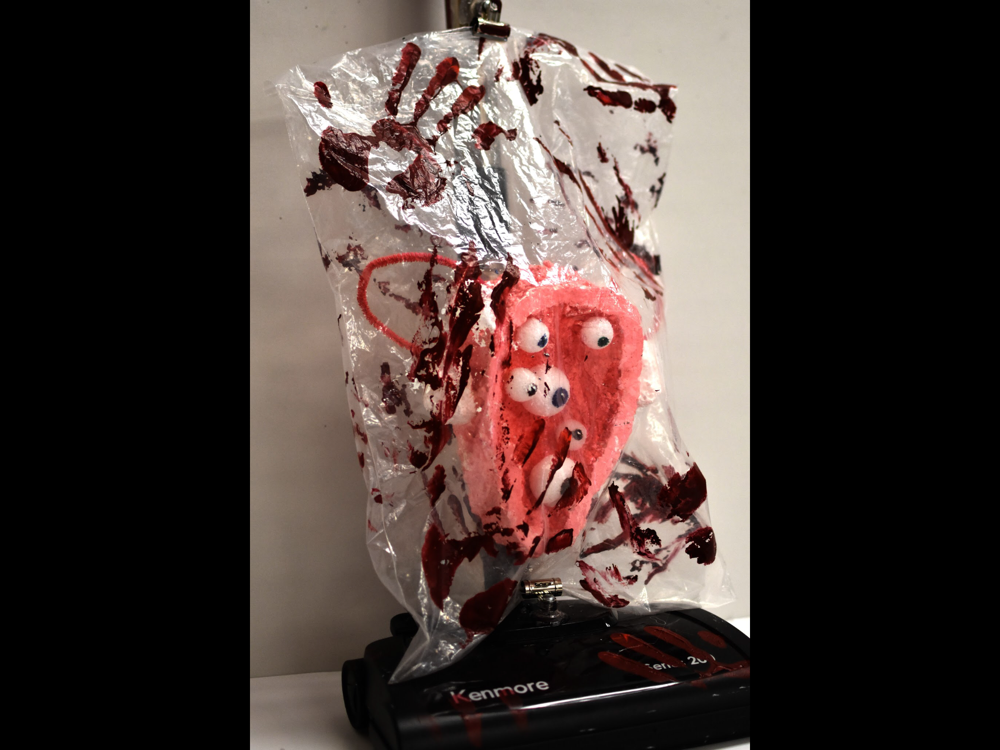
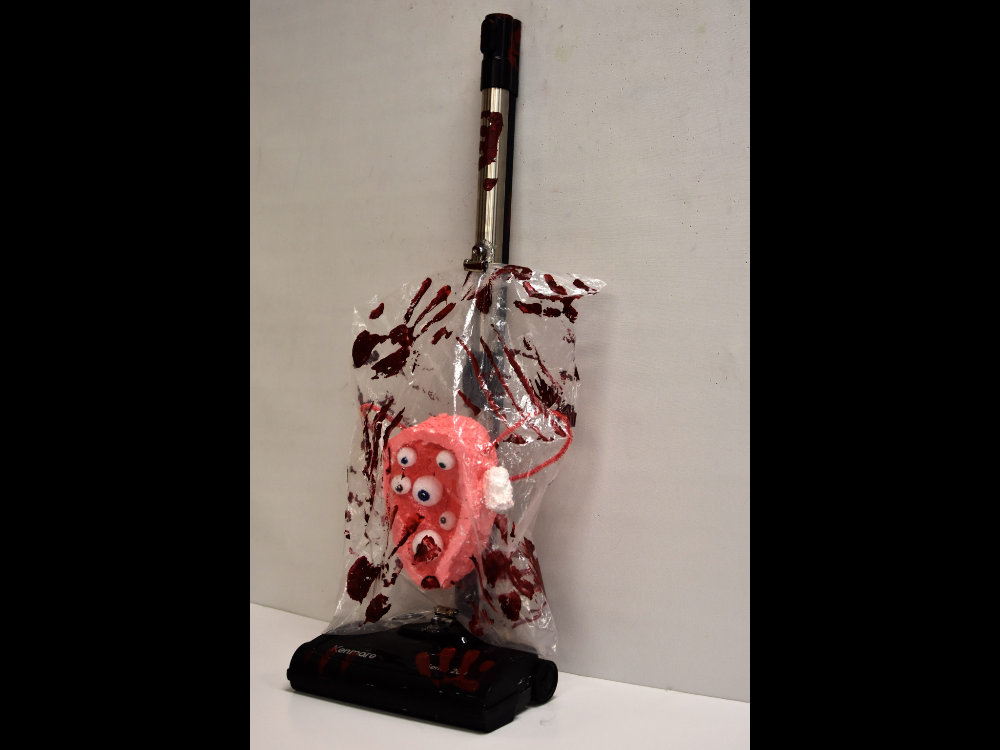
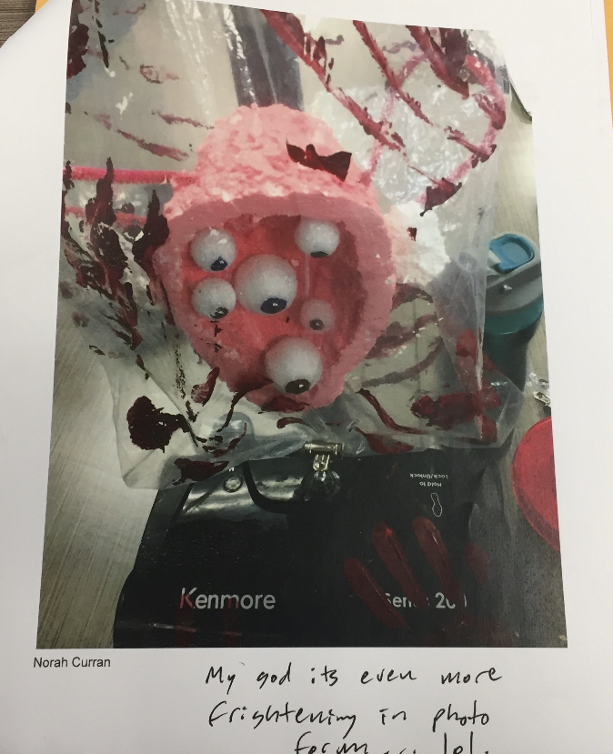
One early example of my interest in the human/nonhuman interface is present in this sculpture from my high school IB Art class. As you can see, it has an organic element of the uterus, and an object element in the vaccum. These two stereotypical images of womanhood envoke opposite forces: pushing out and sucking in respectively. They come together to create a confusing and terrifying self, helped by the inclusion of eyeballs to imply subjecthood within this frankencyborg embodiment of oppression in the oikos.
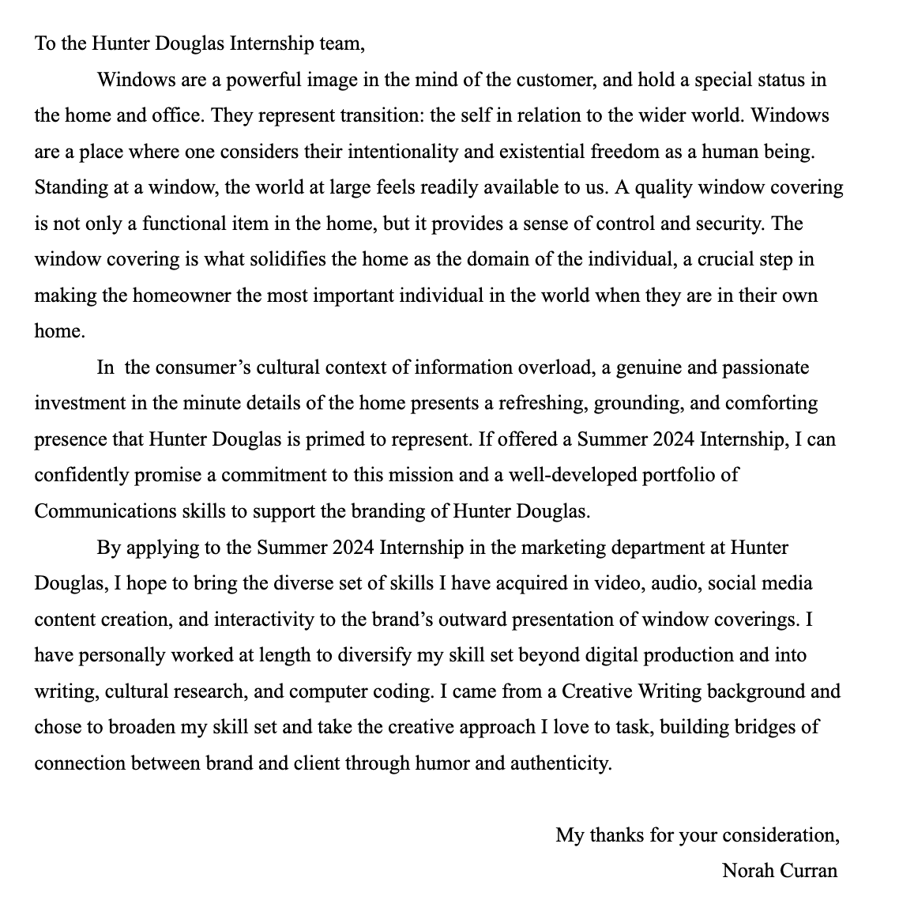
I keep a cache of almost every cover letter I write while I apply to jobs, and I read them over sometimes when I am starting up another round of applications. It doesn't make me feel anything at all, beyond a sense of vague alienation. However, I have recently considered giving up and AI-generating a grammarless prose poem of keywords that will be picked up by algorithms and put in front of hiring managers. I also send them this website as my digital portfolio.
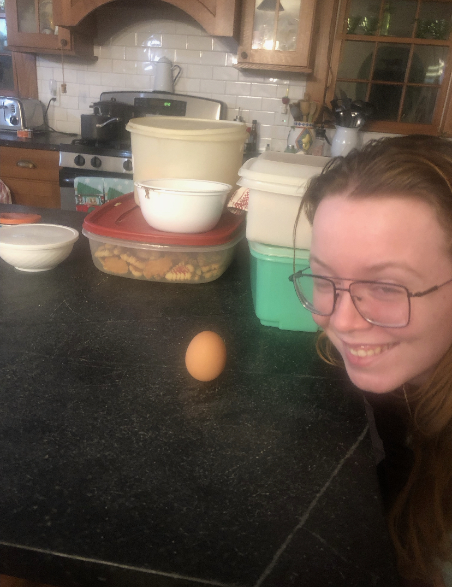
Two pictures of me, respectively taken after standing an egg upright, and my brothers wedding.
In 2022, I was interviewed at NYC Pride for Tokyo News. I have never been able to find the video on the Internet.
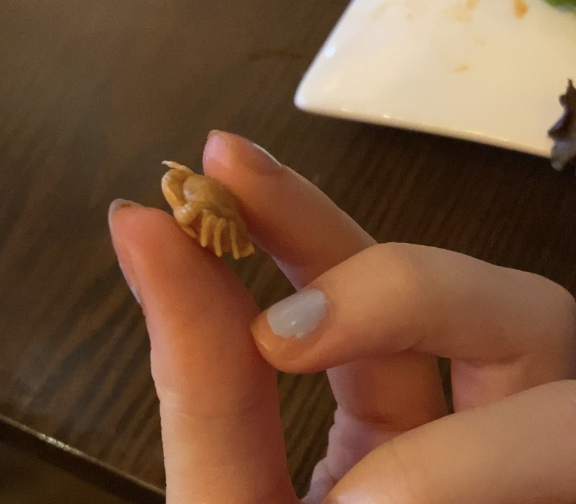
I once found a very little crab inside of a mussel in a restauraunt. It was super weird and disquieting.
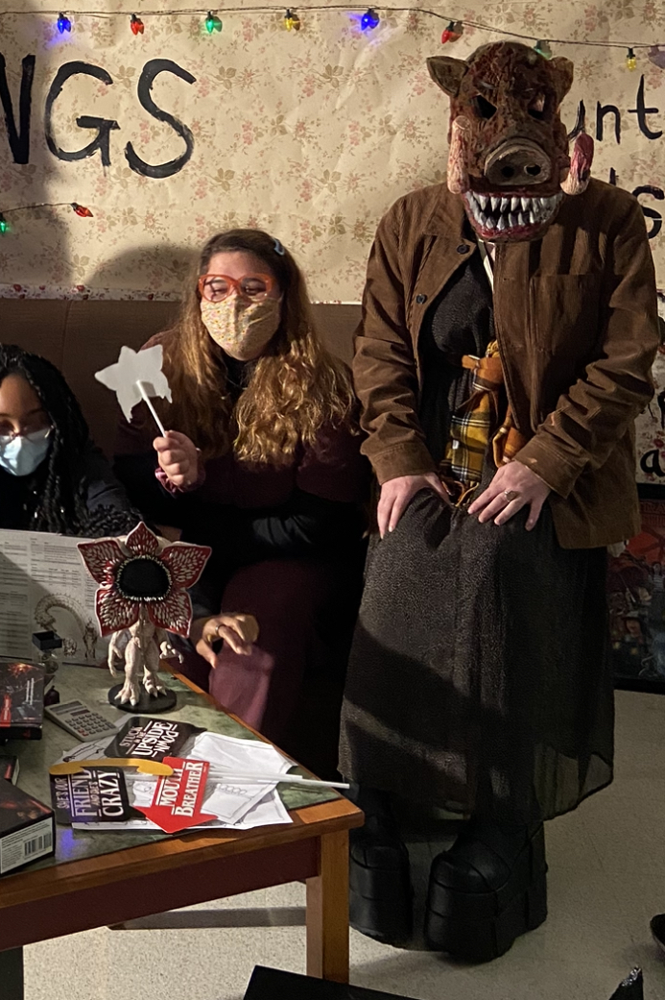
I am the boar woman in this photograph.
When I first began working as a copywriter, I took this picture because of the well-crafted product text. Unfortunately, my inspiration in copywriting was the idea that every piece of text you have ever seen was written by a person. I think in part my shift to technoetics and digital humanities was a radical restructuing of myself in the face of that seed of inspiration being crushed, resisting total eradication by finding new curiosity in technological consciousness.
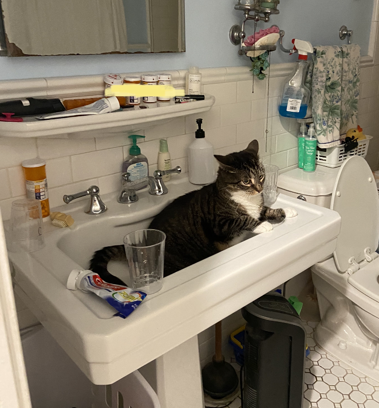
My cats like to sit in the bathroom sink.
I live on an inlet, and once, there was a dolphin outside of my house.
My favorite animal is a tiger because of a dream I once had.
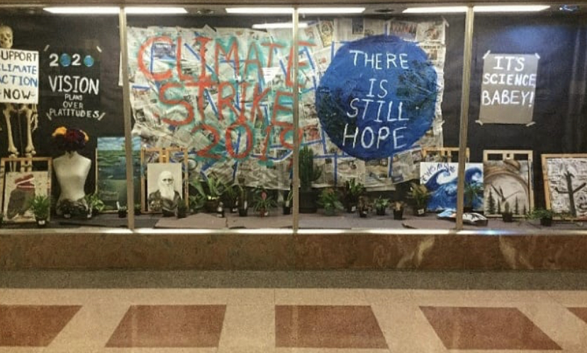
I made this art installation in my high school while my classmates organized a walkout to implore legislators to save our planet. My aim was to move people to action by igniting their belief in hope for our ecological future.
During COVID, the history department gave a quiz grade for making a historical figure out of an egg. This is Chegg Guevara and Camilio Ciengfueggos.
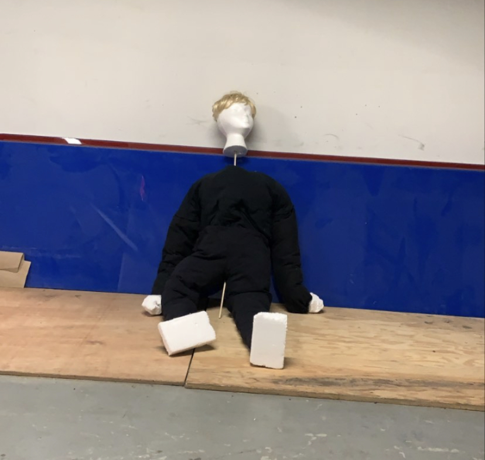
I don't remember why, but I made this puppet for a theatre assignment.
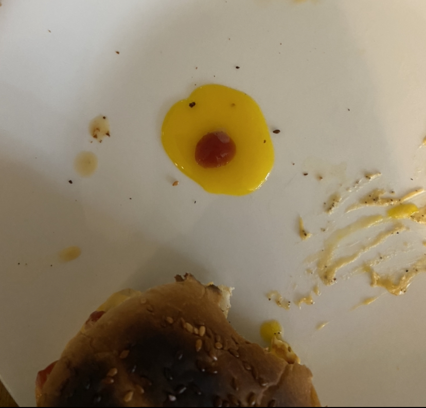
This is some yolk and hot sauce that I found to be beautiful one morning while I ate breakfast.